HORROR SYSTEMS DESIGN // BENEATH THE QUESTLINE · QUEST 1
The Fear Index
Tension design for a monster you are not supposed to fight.
Zinnia never kills you. She hunts through a number from 0 to 100 that rises with how you play:
how fast you move, how loud you are, how long you stand in the dark, and whether you look at her.
This page is the system, the enemy it was built for, and what I learned from watching three kinds of horror players.
Zinnia, modelled and textured by me in a low-poly PS1 style.
View on Sketchfab ↗
The enemy
Zinnia: small, fast and frightened.
A dog-sized creature with a pink crystalline body, long fins and tendrils, and teal eyes. Fast, agile, and clearly not from this world.
She is not purely hostile. She saw an opportunity to leave her dimension in a rupture and escaped through with the wizard.
She hunts the royal guard, the adventurers, or anything that might disturb him, because she is grateful to be here.
She never kills you directly. A capture ends in a short stagger and a reset to the last safe point, not a game over.
Her threat is lost progress and lost time, which is exactly what the knights in the story complained about.
But she can use traps and open dimension rifts to make you lose track.
Level 2: a sound, a shadow, a gate that was open now closed.
Level 3: first full silhouette at a distance. She flinches away when you lift the artifact.
Levels 4 to 5: close encounters. She is clearly frightened, not furious.
Level 6: she does not attack at the ring. She stops and looks at the artifact.
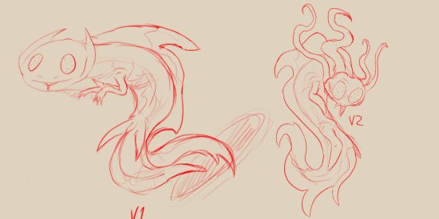
First concepts: line work
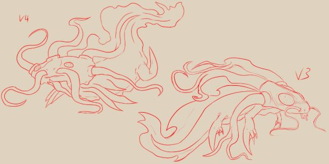
Second concepts
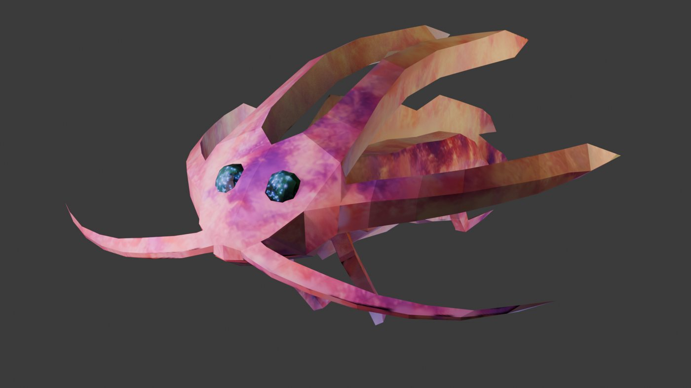
PS1 style render
The Fear Index
A number that watches how you play.
The Fear Index (FI) runs from 0 to 100 and updates every 0.2 seconds. Player actions push it up, recovery pulls it down, and its value decides what Zinnia, the lights and the audio do. Inspiration: Alien: Isolation's tracked detection risk.
Escalation
FI
State
Zinnia
Environment
Audio
0–25
Calm
Observes from afar, hides and peeks
Normal lighting
Soft ambience
25–50
Suspicion
Brief appearances, partial silhouettes
Slight flickers
Distant footsteps, skittering
50–75
Agitated
Blocks paths, glowing eyes
Shadow movement
Whispering, chiming
75–100
Panic
Rushes the player (non-lethal)
Major flickers
Loud spike
Player actions raise fear
Action
FI added
Notes
Walk
0
Safe movement
Run
+2 / sec
Tension ramps while running
Use a light source
+1 / sec
Attracts monster interest
Stay in the dark
+3 every 5 s
Fear of the unknown
Look at Zinnia
+15 every 3 s
Very effective
Make a loud noise
+20
One-time jump
Rotate the artifact
+5
She hears it
Recovery lowers fear
Condition
FI change
Notes
Safe light (bright area)
−1 / sec
Only if walking or standing still
Hide successfully
−15
Reset mechanic
Stay silent
−5 every 10 s
No running, no noise
Safe zone
−3 / sec
Zinnia cannot enter
How Zinnia reacts
Adaptive
She picks a strategy from what you do, which is what makes each run feel different.
Gate pursuit
She follows through gates with a 3 to 5 second delay. Taking several gates quickly buys distance.
Gate blocking
At 50+ FI she can sit in front of a gate, forcing you to find another route or flip it to its second colour.
Artifact attraction
She hears the artifact. Using it repeatedly is a controlled risk.
Safe zones
She cannot enter. She stares in from the arch, and the glow in her eyes dims.
Retreat
After a Panic rush she retreats for 20 to 30 seconds and the FI drops slowly. That is where the peaks and valleys come from.
Example: player runs in darkness → Fear rises to 60 → Zinnia blocks the corridor → player hides in a crate → Fear drops → Zinnia retreats.
System flowchart
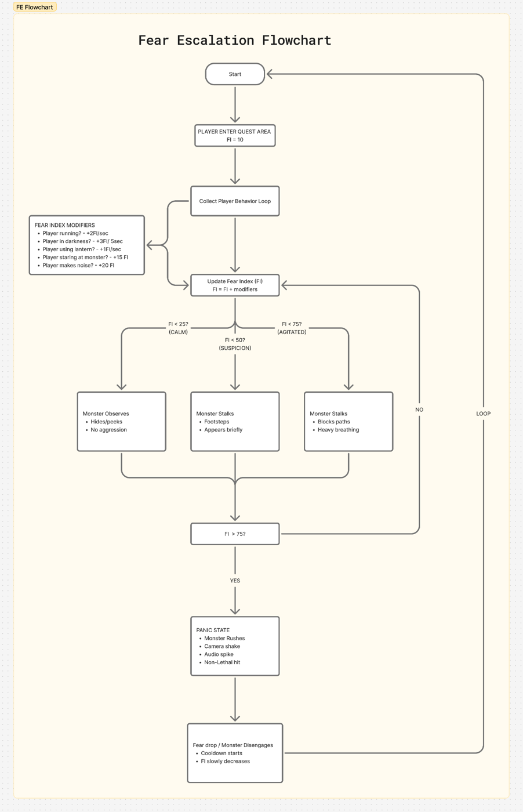
Monster behaviour
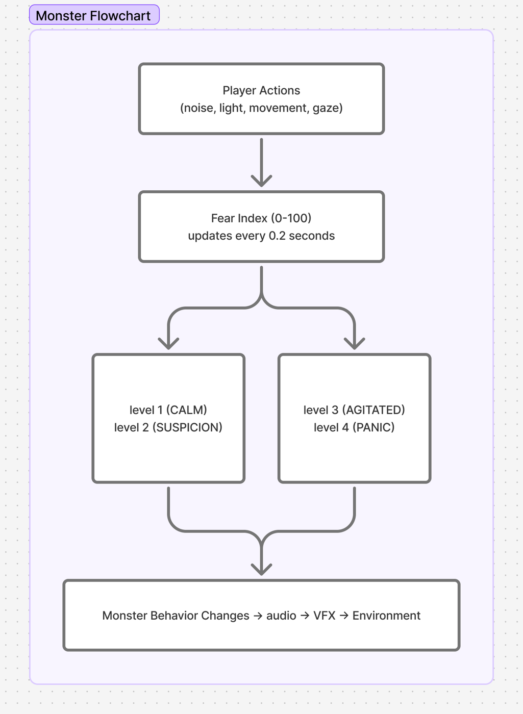
Interactive
Play with the Fear Index.
A small web simulator that uses the rules above. Toggle actions and watch Zinnia and the Fear Index react. Or run one of the three player archetypes.
10/100CALM
Zinnia
Environment
Audio
Hold-style actions (click to toggle)
One-time actions
Or watch a player archetype (120 s at 8x)
Zinnia rushes you at Panic and retreats for about 25 seconds. The archetype runs are scripted behaviour, simulated with these rules.
Player research
Three players. Three curves.
Horror players don't all play the same game. I looked at three archetypes and how their actions gather tension through the Fear Index.
The Careful
Moves slowly, listens, hides early, uses little light and little noise.
Curve: a slow burn. Almost flat for the first stretch, then a steady climb, never a spike.
Conclusion: careful play delays fear but cannot skip it. Time spent in the dark keeps adding tension even when the player does everything right.
The In-Between
Runs when pressured, uses the light, and hides when things get bad.
Curve: a steady rise to one big peak near the top of the range, then a sharp relief when they find a hiding spot.
Conclusion: this is the arc the system is designed around: build, near-panic, release. It is the one most players get.
The Reckless
Runs, makes noise, stares at the monster, ignores safe spots.
Curve: the fastest climb, a hit at 100, then a crash after Zinnia rushes and retreats, then a second climb.
Conclusion: reckless players burn through the whole range quickly. The rush-and-retreat rule turns that into a second wave instead of a dead end.
Fear Index by player type
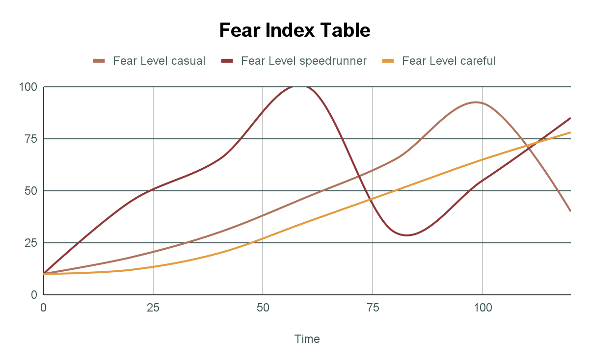
Casual (in-between), speedrunner (reckless) and careful.
Before vs after the recovery system
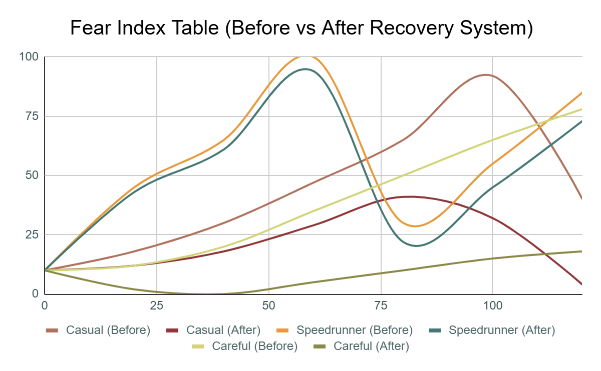
Adding recovery turns one-way climbs into peaks and valleys.
What I took from it
Each playstyle produces its own curve, so the monster feels adaptive instead of scripted.
Peaks need valleys. Recovery (safe zones, hiding, silence) is what keeps tension from becoming exhaustion.
Instead of linear pacing, the game breathes: building suspense, releasing pressure, and tightening again.
The core mechanic
The tower is a puzzle you read.
There are no stairs. Every room connects to the next through spatially altered gates, so progress means reading gate numbers and colours and choosing the right exit. Disorientation is the tension source: the knights gave up from exhaustion, not from wounds.
Every gate has a number (and a colour on the last level). Entering gate N places you in the room paired with N.
Most gates have a second colour: a second destination. Without the artifact, only the first state is active.
Rotating the artifact flips only the gate you are facing.
Safe Zones are the only places where the Fear Index drops reliably.
Zinnia can follow through gates, with a short delay.
Gate states reset when you leave the room, so the tower can't be permanently rewritten.
The gate mechanic working in the prototype.
The artifact is a tension tool
A ritual blade used as a dimensional key. It is not a weapon. Using it has a cost, which is exactly what makes it interesting in a stealth horror game:
The ~1.5 s use animation cannot be cancelled, so using it near Zinnia is a risk.
It makes a small sound (+5 Fear Index), competing with your need to stay quiet.
It glows, which counts as a light source.
Anti-frustration rules
Dead ends always contain a clue, a note or a hiding spot, never nothing.
If you loop the same room three times, a subtle chalk mark points toward the right exit.
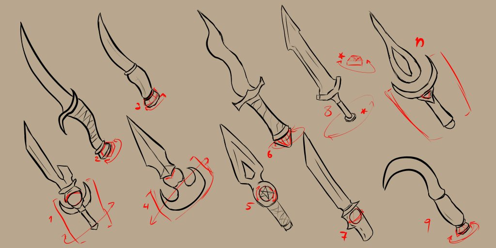
Artifact concepts: which part rotates, and how readable is it at a glance?
Pacing & tension curve
Five acts, one rising fear.
ACT 1
The Road & the First Gate
Level 1
Dry, bureaucratic, mildly comedic. The player thinks this is an escort job.
Goal: curiosity and a small laugh.
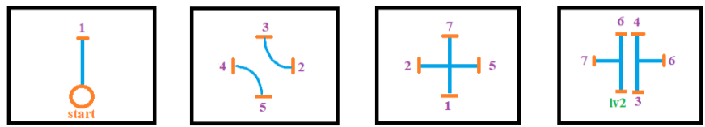
ACT 2
Learning the Gates
Levels 1–2 · FI Calm 0–25
Puzzled, then uneasy. Zinnia is only a sound or a shape at the edge of vision.
Goal: the first real fear of being lost.
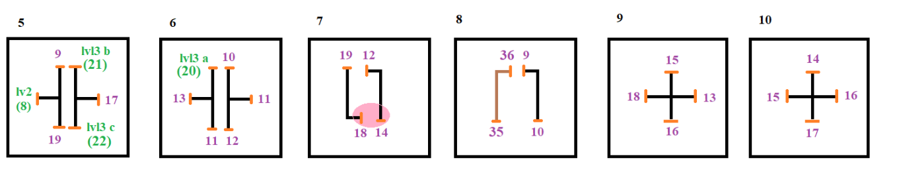
ACT 3
Safe Zone & the Artifact
Level 3 · Point of no return
Relief, then wonder. The player gets the artifact, and then it is taken away: from here Zinnia hunts actively.
Goal: reward, right before the threat.
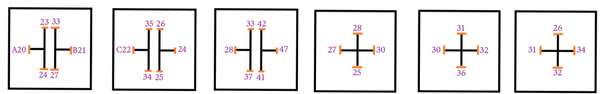
ACT 4
Being Hunted
Levels 4–5 · FI passes 25 and 50
Pressure and dread. Denser rooms, more wrong exits. Zinnia moves from observing to stalking. Safe Zone 2 needs the artifact.
Goal: fear turns into active danger.
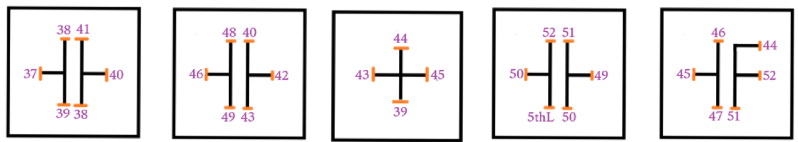
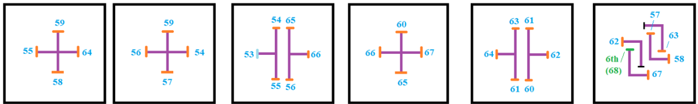
ACT 5
The Ring & the Office
Level 6 · Climax
Twelve two-coloured gates in a ring, only one correct. Zinnia is at her most aggressive, then she just stops and looks.
Goal: high panic, then a sudden emotional drop.
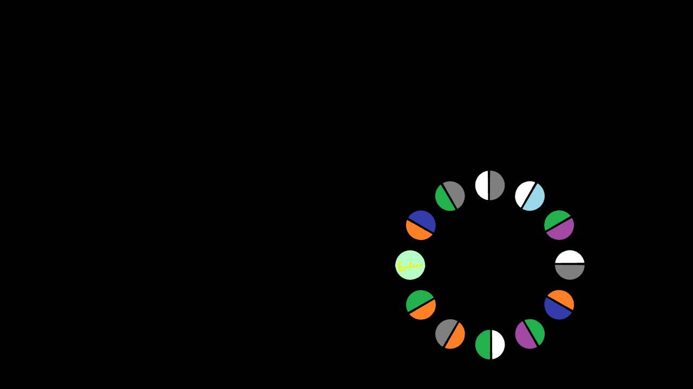
The story under the tension
The quest brief is a lie the player slowly unlearns.
The contract is marked low risk, and the Ministry is wrong about that. The wizard is not a lazy recluse, the tower is not a maze built for fun, and Zinnia is not a simple monster. The player learns it in layers: the absent wizard, the failed experiment, then the thing that came back.
At the end the player chooses: persuade and escort him, force him, or take the bargain and help with one final experiment. Each path closes some doors and opens others, including what happens to Zinnia.
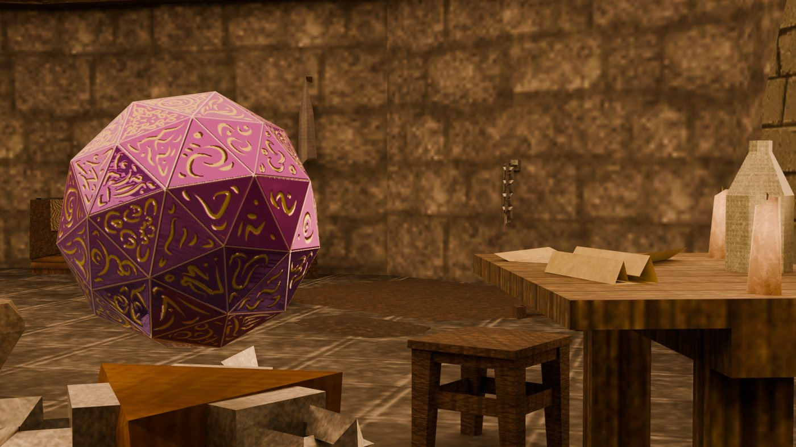
Prototype of the Wizard's Office, also on Sketchfab ↗
The full document
Quest 1: “Get the Wizard Back to Work!”
The revised design document, including the updated Fear Index and the Horror Director tension logic.